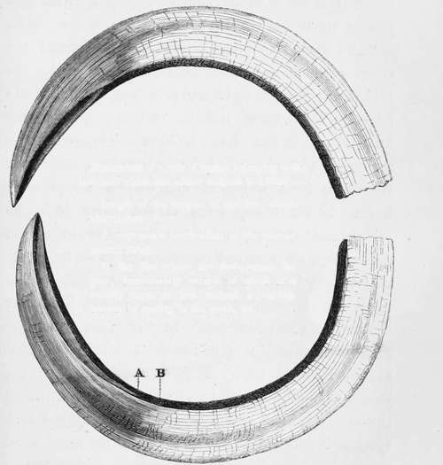

Chapter XIX. Part 2
Description
This section is from the book "Hog Hunting In The East, And Other Sports", by J. T. Newall. Also available from Amazon: Hog Hunting in the East, and Other Sports.
Chapter XIX. Part 2
" The last boar I killed in Eajpootana had one of the most perfect lower tushes in shape and sharpness I ever saw. One of them formed an exact semicircle from root to point, the curve, of course, being principally within the jaw. It was just nine inches, which is far beyond an average length for even full grown boars, indeed may be considered remarkably fine. The tush in the left jaw was more perfect in shape than the other, though that, too, was a very fine specimen, but it bad far less outside, indeed had probably been at some time broken* By the way, on that very day my nose came to grief, though in a different manner to Norman s. I may as well give you an account of the day's hunting.
Dimensions of a pair of tushes belonging to the last boar which the author assisted in killing :—
Length of the longest of the two, about nine inches.
A. represents termination of the portion ground away.
B. the line where the tush enters the gum, immediately outside of which it is usually more or less stained a reddish brown, by rooting in the earth, etc.
A pair of tushes.
" The scene was near Oodeypore, in a part of the country which was in a measure preserved by the Maharana; though, as he was paralytic, he couldn't do . much in the way of shikar. It was a ground well known to some few of the hunters belonging to those regiments which have had the luck to be quartered at Neemuch, from which it was distant about sixty miles. Unfortunately none of our party had previously hunted there, and not having gone to the right spot at first we were not so successful as we otherwise might have been. Pig were numerous; but we got them, for the most part, in thick jungle, instead of beating in some low scrub in the open, which we afterwards found was a favourite cover, and that usually resorted to by English sportsmen. In the jungle were built one or two watch towers, from which the native princes and their attendants enjoyed such sport as is afforded by shooting pig, to my mind a sad waste of porcine life. It was probably owing to this circumstance that the villagers took us to the thick jungle instead of to the open country.
" We were travelling with the camp of the Agent to the Governor-General in Rajpootana, at whose exceedingly hospitable table we sat down a dozen or more strong daily. . Our party included one or two ladies, and a very pleasant time we had of it. Well, out of the dozen, five of us mustered one morning early, and with another officer who met us from Oodeypore, reached the village named as the fixture in good time.
* Appendix, Note U.
"The jungle we beat was very thorny, but was sufficiently open, in many parts, to admit of our riding through it. We were not long in it before a sounder was turned up and went away in front. One or two pig were very nearly speared, but were lost sight of in still thicker j ungle, in which we got separated and wandered about for some time, employed most unprofitably as far as sport was concerned. What my companions did I know not; but I again came across one of the pig, and again lost him after a short spurt and painful struggle with the thorns. At last four or five of us managed to effect a reunion, and getting hold of some of the men proceeded to beat some fields and high prickly-pear hedges in the neighbourhood of a village on the outskirts of the jungle.
"A large boar was ere long viewed in front, trotting slowly away, and as he seemed inclined to take his way into the open, and we feared his breaking back, if at once pursued, one or two of us checked the inclination of the others immediately to ride him, and so we waited till he had disappeared over a low ridge.
We then galloped ahead and reached the point at which he had topped the ridge, when lo ! there was nothing to be seen of him. How that boar avoided us I could not for the life of me make out; and of course another and myself had meekly to receive the vials of wrath of the rest for withstanding their first impulse at immediate pursuit. We beat some hedges, which appeared to be the only places of refuge he could possibly have sought undetected by us, but to no purpose. We then went back and beat the prickly-pear hedges we had quitted, and amid which the ground was nearly all fallow.
" A boar:—supposed by some to be the one we had lost was said to be afoot and knocking about among the high thick hedges, and some rode in one direction, some in another. I found myself in one field with an immense hedge in front, and thought I might as well stay there till something definite was ascertained of the boar s whereabouts. One of the other hunters was a little beyond, but divided from myself by at that spot another impassable hedge.
" I had not waited long when I saw a very fine boar, with a noble pair of tushes, canter leisurely along not a hundred yards from me, but on the other side of the tall mass of prickly-pear in front of me. By galloping round to get out of the field by the gate opening, I should lose sight of the pig and most probably miss him altogether. There was just one place in the hedge, however, which I thought my horse might negotiate, for he could jump like a deer when he chose, and his blood was up after pig. Accordingly I gave him a touch of the spur to stir him, took him back into the field, and crammed him at the hedge. There was the pig right opposite on the other side, and craning or shirking was quite out of the question— over, into, or through we were bound to go, and into or through prickly pear is, you know, a most unpleasant alternative. But as old Dick Christian would have said, ' I threw my heart over,' and over accordingly we followed it. My horse had caught a sight of the pig, and was everyway as much interested as myself in the spectacle. He made a splendid spring, knocked away a few of the topmost sprouts, and nearly fell on landing — for there was a bit of a drop on that side — but picked himself up, and away we rattled after the boar.
Continue to:
- prev: Chapter XIX
- Table of Contents
- next: Chapter XIX. Part 3